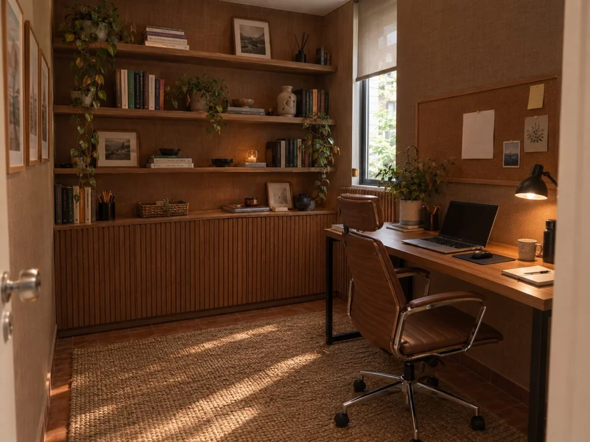

Um espaço acolhedor para você se entender, esteja onde estiver.
Atendimento psicológico em português para brasileiros no Brasil e no exterior, com base na TCC, uma abordagem prática, estruturada e feita para caber na sua rotina, em qualquer fuso horário.
Especializanda em Neuropsicologia pelo Albert Einstein
Não importa o fuso horário: a gente encontra um horário que funcione para você.
Atendo brasileiros espalhados pelo mundo: quem mora fora, quem viaja a trabalho, quem simplesmente prefere terapia à noite ou de madrugada. Os horários das sessões se ajustam à sua rotina, não o contrário.
Não encontrou sua cidade na faixa acima? Sem problema. É só me chamar no WhatsApp e informar seu fuso e suas datas disponíveis. O horário é combinado direto com você.

Minha escolha pela Psicologia veio de uma experiência pessoal
Na juventude, a ansiedade dificultava a forma como eu lidava com minhas emoções. Foi na terapia que encontrei acolhimento, aprendi a me regular emocionalmente, desenvolvi autoconhecimento e ganhei mais segurança.
Nesse processo, percebi que a terapia gera mudanças reais no comportamento e nas relações. Foi ali que me apaixonei pela Psicologia e tive a certeza de que todas as pessoas podem mudar e evoluir quando encontram escuta e direcionamento certo.
Quando entrei na faculdade de Psicologia, entendi que poderia ajudar outras pessoas por meio da escuta atenta e de intervenções adequadas, construindo com elas uma relação mais consciente e saudável consigo mesmas.
Levo essa vivência para a minha prática clínica: crio um espaço seguro, onde você pode falar no seu tempo, compreender suas emoções e aprender novas formas de lidar com os desafios do dia a dia.
Terapia Cognitivo-Comportamental (TCC)
Se você nunca fez terapia ou não conhece a Terapia Cognitivo-Comportamental (TCC), pode pensar nela como um espaço para entender por que você sente, pensa e reage da forma que reage.
Ao longo da vida, todos nós desenvolvemos maneiras de interpretar as situações e de lidar com elas. Algumas nos ajudam. Outras, sem que a gente perceba, acabam alimentando a ansiedade, a culpa, a insegurança, os conflitos nos relacionamentos ou o sofrimento emocional.
Na terapia, vamos compreender esses padrões juntos. Meu papel não é dizer o que você deve fazer, mas ajudá-lo a enxergar sua história com mais clareza, entender o que mantém esse sofrimento e construir formas mais saudáveis de lidar com os desafios do dia a dia.
Objetivos claros
Cada processo tem metas definidas junto com você, revisadas ao longo do caminho.
Ferramentas práticas
Técnicas e exercícios que você leva para o dia a dia, entre uma sessão e outra.
Foco no presente
Trabalha o que está afetando sua vida agora, sem deixar de considerar sua história.
Sessões online
Atendimento por videochamada, com a mesma qualidade e sigilo de um consultório presencial.
Do primeiro contato até você se sentir à vontade comigo, cada etapa pensada com cuidado.
-
Passo 01
Primeiro contato
Você me chama e eu te conto um pouco de como são os meus atendimentos: um trabalho de escuta, respeito e acolhimento, num espaço seguro e sem julgamentos, onde você fala tudo que precisar, no seu tempo.
-
Passo 02
A abordagem
Uso a TCC, uma abordagem prática e objetiva, que ajuda a entender como pensamentos, emoções e comportamentos estão conectados, e como pequenas mudanças nesse processo geram as transformações que você precisa.
-
Passo 03
O processo
A terapia acontece através da sua fala e da sua disponibilidade para se ouvir e se compreender. Ao longo das sessões, observamos seus padrões, compreendemos suas reações e desenvolvemos estratégias para mais clareza emocional, equilíbrio e segurança.
-
Passo 04
Suas próprias respostas
A terapia não entrega respostas prontas. É um caminho para você construir as suas, com mais consciência e segurança. Se sentir que é hora de começar ou continuar esse processo, fica aqui o meu convite para conversarmos.
O que você gostaria de trabalhar?
Estes são alguns dos motivos pelos quais as pessoas procuram terapia. Se você se identificar com algum deles, ou com algo parecido, esse pode ser um bom ponto de partida para a nossa conversa.
- Ansiedade
- Autoestima
- Relacionamentos
- Depressão
- Estresse e rotina
- Autoconhecimento
- Regulação emocional
- Ataque de pânico
- Insegurança
- Perfeccionismo
- Culpa
- Solidão
- Timidez e fobia social
- Pensamentos repetitivos
- TOC
- Cansaço emocional e burnout
- Dificuldade em dizer não
- Controle da raiva
- Dependência emocional
- Término de relacionamento
- Divórcio
- Dificuldades na comunicação
- Luto
- Mudanças de vida
- Crise de identidade
- Carreira
- Procrastinação
- Sono
- Adaptação a morar fora do Brasil
- Saudade e distância da família
- Maternidade e puerpério
- Depressão pós-parto
- Infertilidade
- TDAH
- Autismo
- Borderline
- Bipolaridade
- Fobias
- Traumas e abusos
- Transtornos alimentares
- Perda de peso
- Dores crônicas
- Intimidade
- Sexualidade
- Desenvolvimento pessoal
- Outros
Não encontrou o seu motivo na lista? Tudo bem. Cada história é única, e você pode me contar o que te trouxe até aqui.
O que dizem sobre as sessões
Adorei a nossa primeira sessão. Eu me senti segura e creio que a Júlia irá me ajudar bastante.
A Júlia é uma especialista extremamente acolhedora, que sabe conduzir reflexões importantes e incentivar você a sair da zona de conforto para enxergar novas possibilidades. Ótima profissional, eu super recomendo.
Julia é atenciosa e empática. Sem dúvida, uma profissional excelente e uma voz necessária a todos que precisam de acolhimento, reflexão, entendimento ou perspectiva.
Encontrei o que eu buscava nas terapias: compreensão clara e precisa do meu comportamento e como é minha reação. Visualizar isso me trouxe mais paz por causa da Júlia. Gratidão 🙏🏽
Muito atenciosa!
A sessão com a Júlia é ótima, ela é uma profissional incrível e tem um cuidado incrível! Super indico.
Julia é uma profissional incrível! Escuta com atenção, dialoga e nos faz pensar e refletir a todo momento, fazendo provocações e orientações. Todos deveriam ter a oportunidade dessas trocas com ela!
Atendo de segunda a sexta
Os horários são combinados diretamente com você, de acordo com a sua rotina e o seu fuso horário.
Vamos conversar
Clique no botão abaixo para falar diretamente comigo no WhatsApp.
Agendamento e investimento
Antes de iniciar a terapia, conversaremos sobre o funcionamento do atendimento, frequência das sessões, honorários e formas de pagamento.
Você será direcionado para o WhatsApp.